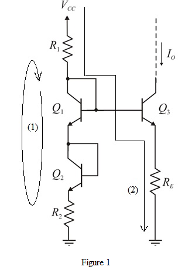

Apply Kirchhoff’s voltage law in loop (1) as shown in Figure 1.
Apply Kirchhoff’s voltage law in loop (2) as shown in Figure 2.
Thus, the expression for the current  is
is .
.
Refer to Figure P6.140 in the text book.
Draw the modified circuit.

Apply Kirchhoff’s voltage law in loop (1) as shown in Figure 1.
Apply Kirchhoff’s voltage law in loop (2) as shown in Figure 2.
Thus, the expression for the current is.
Substitute in the expression of the current .
.
Hence, the expression of the current when is.
when is.
Equate the expressions of the currents and
and .
.
Since, the expression for the resistance is,
is,
Thus, the relationship of to
to  and
and is.
is.
Thus, the value of for the output current of 0.5 mA is .
.
Find the values for  and
and  .
.
Thus, the values of  and
and  for the output current of 0.5 mA is.
for the output current of 0.5 mA is.
The lowest voltage that can be applied to the collector of  is,
is,
Thus, the lowest voltage that can be applied to the collector of  is.
is.